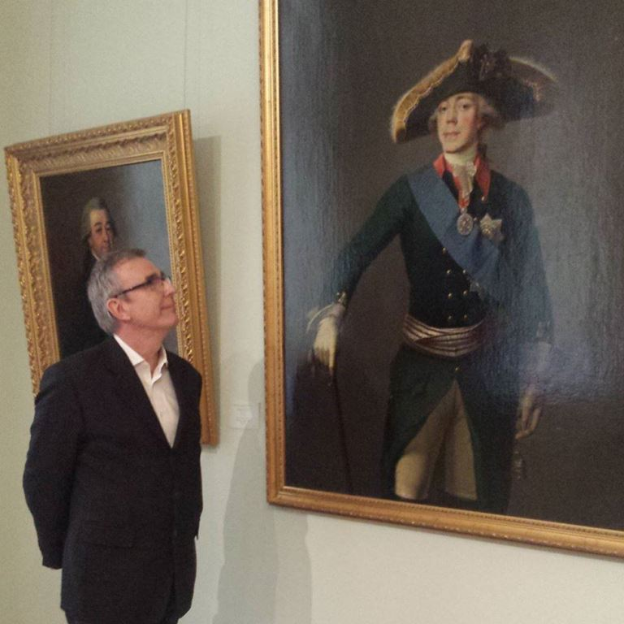

L’occasion de rencontrer le Prince Stéphane Belosselsky Belozersky, descendant en lignée directe de Rurik et des premiers Princes de Kiev, fut celle de pouvoir ainsi parler avec le Lieutenant Grand Prieur du Grand Prieuré Russe de l’Ordre de Saint Jean de Jérusalem et d’évoquer avec lui l’origine du Grand Prieuré Russe et des événements qui l’ont précédé.
L’histoire nous dit que l’ordre de Saint-Jean de Jérusalem apparut autour de 1100 à Jérusalem, après la première croisade, puis en 1291 on le trouve à Chypre et en 1310 à Rhodes. Expulsé de Rhodes par la conquête turque en 1523, l’ordre s’installe à Malte sous la protection de Charles Quint. Nous pouvons dire qu’alors, à Malte, l’Ordre devient une puissance maritime souveraine. Mais quand Bonaparte arrive, l’ordre de Saint Jean de Jérusalem est expulsé de Malte en 1798 et se retrouve en Russie sous la protection de Paul Premier.
Daniela ASARO ROMANOFF : Il s’agit d’un Ordre qui a toujours eu la vocation hospitalière et charitable, n’est-ce pas?
Le Prince Stéphane Belosselsky Belozersky :
Oui, la vocation première des Chevaliers de l’Ordre de Saint Jean a toujours été l’aide et le soutien aux malades.
Dès 1048, à Jérusalem, grâce à l’initiative de marchands amalfitains une communauté religieuse desservait l’église Sainte-Marie-Latine et administrait un hôpital situé dans la ville sainte en faveur des pèlerins.
A la suite de la conquête de Jérusalem en 1099, le bienheureux Gérard de Martigues connu aussi sous le nom de Gérard Tenque, alors à la tête de l’ensemble de ces institutions, fonda à partir de l’hôpital et des hospitaliers l’Ordre de Saint-Jean-Baptiste-de-Jérusalem.
Celui-ci assuma simultanément les soins et la défense militaire des malades et des pèlerins dans les territoires chrétiens repris aux musulmans.
Aujourd’hui encore, nos activités assurent cette continuité.
D.A.R. : Accueillir les membres de l’Ordre de Saint-Jean, qui étaient en difficulté, fut tout simplement un acte de charité chrétienne ou Paul Ier avait à l’esprit des changements en Russie, des changements religieux ?
S.B.B. : Non! Il ne s’agit ni d’un acte de charité ni de la volonté de changement religieux. Depuis 1797, Paul Ier était le protecteur de l’Ordre, et, à ce titre, il ne fit que son devoir en accueillant en Russie les chevaliers chassés de leur Ile par Bonaparte. Par ce geste, l’ordre de Malte fut sauvé.
D.A.R. : Pourquoi Paul Ier Romanov disait qu’il se sentait catholique dans le cœur ?
S.B.B. : En 1782, le Grand-Duc Paul, fut envoyé par sa mère la Grande Catherine pour visiter l’Europe. Lors de ce voyage, en terre catholique, il se sentit “aimé” par nombre de ceux dont il fit la connaissance et il conserva de ses séjours une très forte impression. Ce sentiment pour lui était nouveau, car il n’avait jamais ressenti autant d’intérêt et d’affection. Les quelques rencontres qu’il eut avec les pères Jésuites l’impressionnèrent aussi et l’orientèrent certainement vers de nouvelles convictions religieuses. Pour mémoire, le 7 mars 1801, en réponse à la requête du Vicaire Général des Jésuites en Russie et à la demande personnelle du nouveau Tsar Paul Ier, Pie VII publia le Bref Catholicae Fidei, par lequel il approuvait et confirmait officiellement l’existence de la Compagnie de Jésus dans l’Empire de Russie.
D.A.R. : Pour la mère de Paul, la Grande Catherine, l’Ordre de Malte n’était qu’un point de référence pour la politique ottomane. Paul était vraiment intéressé par l’Ordre, comme un modèle de chevalerie.
A la mort de sa mère, Paul affirme sa volonté de protéger l’Ordre en échange de la Croix de Malte pour lui et ses enfants.
Le Tsar donne le Palais Vorontsov de Saint-Pétersbourg à l’Ordre pour en faire une Ambassade. Comment l’Eglise orthodoxe russe a-t-elle réagi par rapport au choix de Paul Ier? Le 29 novembre 1798 Paul Ier crée un deuxième Grand Prieuré Russe d’obédience orthodoxe, était-ce à la demande de l’église russe ?
S.B.B. : Le 27 octobre 1798, Paul Ier fut proclamé 72ème Grand maitre de l’ordre de Malte.
C’est le 28 décembre de la même année, qu’il créa, parallèlement au prieuré russe déjà existant et réservé à ses sujets catholiques, une seconde institution analogue dénommée « Grand Prieuré de Russie » ouvert aux Russes orthodoxes, mais aussi à toutes personnes jugées dignes d’en faire partie sans distinction de nationalité, de confession et de classe dans la société.
Durant toute la période Impériale en Russie, le gouvernement de l’Église russe était sous l’autorité du tsar. Cette décision fut donc celle de l’empereur Paul Ier et l’église russe ne fut que peu consultée et s’exprima très peu, sans doute par peur de représailles.
D.A.R. : Le tsar voulait créer des chevaliers héréditaires de l’Ordre dans le cadre de la noblesse russe, qui était orthodoxe. Cela fut-il bien accepté par l’Ordre ? On dit que le Tsar a été critiqué par les Cours européennes, est-ce la vérité ?
S.B.B. : En marge des statuts historiques de l’Ordre de Malte, Paul Ier institua le Grand Prieuré Russe, « pour toujours » selon les textes fondateurs, et avec la volonté d’en confier sa conservation intacte à ses héritiers et aux 21 Commandeurs héréditaires qui furent nommés par lui.
Le Tsar fut d’abord critiqué par les Cours Européennes car il n’était pas catholique et que son prédécesseur, le Marquis de Hompesch, n’avait pas encore abdiqué. Après l’abdication de Hompesch, l’élection de Paul Ier devint difficilement discutable et un grand nombre de nobles russes entrèrent dans l’Ordre.
Quant à l’acceptation par l’Ordre, ce sont bien les chevaliers de Malte eux-mêmes qui désignèrent Paul Ier comme leur grand Maitre…
D.A.R. : Paul Ier devint Grand Maître de l’Ordre, et avec la démission de Ferdinand de Hompesch, il devient Grand Maître de jure et de facto. Mais les historiens parlent encore de l’illégalité du titre de Paul Ier, pourquoi ?
S.B.B. : Ce sont les Chevaliers de Malte qui destituèrent leur Grand Maitre Ferdinand de Hompesch sous prétexte qu’il refusa de défendre l’île face à l’invasion des troupes françaises menées par Bonaparte. Par ses décisions, Hompesch prit le risque d’entrainer au déclin l’Ordre de Saint Jean, voire sa disparition totale. Heureusement, l’Ordre fut sauvé par la Russie.
En 1798, Paul Ier devient le 72ème Grand Maitre de l’Ordre de Saint Jean de Jérusalem
Contrairement aux affirmations faites par quelques historiens soutenant les propos tenus régulièrement par la branche catholique de l’Ordre, Paul Ier n’a jamais été Grand Maitre de facto. En effet, son élection par tous les chevaliers réfugiés en Russie rend incontestable son titre de 72ème Grand Maitre de jure.
Sur l’illégalité de son titre, toujours évoqué par les mêmes historiens, il suffit de se rendre sur le site officiel de l’Ordre de Malte Catholique romain, dont le Grand Magistère se trouve à Rome, via Condotti, pour y trouver le nom de Paul Ier sur la liste des Grands Maîtres. Ceci doit couper court à tout débat sur le sujet.
D.A.R. : Tout ce que Paul Ier avait créé est supprimé le 20 janvier 1817 par une résolution du conseil des ministres approuvée par Alexandre Ier, qui, comme sa grand-mère Catherine, n’aimait pas le Grand Prieuré.
Cependant si certains historiens affirment que le Grand Prieuré a été supprimé par Alexandre Ier, d’autres soutiennent que, même s’il n’aimait pas le Grand Prieuré, ce dernier a continué à survivre en Russie jusqu’à la révolution. Quelle est la vérité ?
Toutefois après la Russie, la France pour le Grand Prieuré ?
S.B.B. : Seul un nouveau Grand Maitre de l’Ordre aurait eu le pouvoir de supprimer ou modifier les décisions prises par Paul Ier en tant que 72ème Grand Maitre. Ce ne fut pas le cas. Alexandre Ier n’a jamais été Grand Maitre de l’Ordre. Il n’en sera que le protecteur à compter du 16 mars 1801. Donc il n’avait pas ce pouvoir. Sous son règne, le rétablissement du Grand Magistère dans le giron du Vatican se fera avec l’accord et l’aide de la Russie. Le Pape entérinera le passage de l’Ordre à St Pétersbourg. Le Grand Magistère continuera à percevoir les participations financières des Commanderies russes et du Grand Prieuré Russe. En 1810 et 1811, pour éviter la fuite des capitaux à l’étranger en période de guerre, le Trésor du Grand Prieuré Russe réintègre le Trésor de la Couronne. La fin des commanderies en tant que fiefs ne marque nullement la fin du Grand Prieuré Russe, mais un changement de type de fonctionnement et jusqu’en 1917, le Grand Prieuré fonctionnera en Russie comme un ordre de décoration.
En 1928, à Paris, les Commandeurs héréditaires font une déclaration et reconstituent le Grand Prieuré Russe en le restructurant de façon formelle. Une association « Grand Prieuré Russe de l’Ordre de Saint Jean de Jérusalem » présidée par le Grand-Duc Andreï Wladimirovitch Romanoff est enregistrée à la préfecture de police de Paris le 2 mars 1955.
Depuis, le Grand Prieuré Russe n’a cessé de fonctionner à travers le monde, mais principalement en France ou son siège est déclaré.
Aujourd’hui à Paris, les descendants des commandeurs héréditaires nommés par le Tsar Paul Ier, ont fait valoir et reconnaître leur droit au sein du Grand Prieuré et lui apportent toute sa légitimité.
Il s’agit des princes Michel et Cyrile Bariatinsky, du Prince Stéphane Belosselsky, du Comte Pierre Cheremetieff et du Comte André Olsufieff.
D.A.R. : Quelques questions sur la spiritualité orthodoxe russe, que j’aime très profondément. Paul Ier était un Russe orthodoxe, catholique de cœur, je suis catholique, mais orthodoxe russe de cœur.
Votre famille descend des Riourik et a un ancêtre très important pour la Russie et surtout pour sa spiritualité: Vladimir le Grand, Saint-Vladimir. L’Eglise catholique approuve le culte de ce Saint Vladimir. L’Eglise orthodoxe russe l’a canonisé, Vladimir est fêté le 15 juillet.
Vous êtes un descendant de Vladimir. Que vous évoque ce saint et dans vos prières, que lui demandez-vous pour la Russie ?
S.B.B. : Saint Vladimir qui christianisa la Russie, Sainte Olga qui fut la première femme russe convertie au christianisme et Saint Basile de Rostov sont tous les trois mes ancêtres directs. Vladimir Ier, vénéré et célébré en Russie tous les 15 juillet en est le Saint Patron.
Je sais ce que furent et ce que firent tous mes aïeux pour la Russie et j’ai le devoir de protéger leur mémoire, en menant des actions dignes et sur les traces de ce qu’ils ont fait. En retour, Vladimir, Olga et Basile me protègent certainement, et grâce à la prière, ils m’indiquent le chemin … .
Pour la Russie, je leur demande d’aider le peuple russe dans ses difficultés du quotidien… .
D.A.R. : Par décret impérial de Paul Ier, le 27 février 1799, votre ancêtre, le prince Alexandre Mikhailovitch Belosselsky, a été nommé sénateur et Commandeur héréditaire de l’Ordre de Saint-Jean de Jérusalem et il a été autorisé à ajouter un autre nom « Belozersky », pour commémorer la souveraineté de sa famille dans la ville de Belozersk.
A notre époque très différente, avez-vous la même charge héréditaire que votre ancêtre? Il y a eu aussi une confirmation de la charge héréditaire par la Grande-Duchesse Maria le 17 juillet 2012, n’est-ce pas?
S.B.B. : Paul Ier, à la création du Grand Prieuré de Russie, qui dans ses textes fondateurs est institué «pour toujours», y prévoit la nomination de Commanderies de famille avec transmission héréditaire. Il nommera 21 Commandeurs héréditaires. Mon ancêtre le prince Alexandre Mikhailovitch en fut le 6ème dans l’ordre des nominations.
La transmission du titre de Commandeur héréditaire se fait de père en fils, au fils ainé.
A ce jour, c’est mon frère Patrick qui détient ce titre. Pour ma part, comme mon ancêtre Alexandre, j’ai été nommé Bailly de l’Ordre et Lieutenant Grand Prieur du Grand Prieuré Russe.
La confirmation de la Grand Duchesse Marie datée du 17 juillet 2012, ne concerne pas le Grand Prieuré Russe, mais confirme la qualité princière pour certains membres de notre famille.
A ce jour, la Grande Duchesse Marie ne soutient pas encore notre institution.
D.A.R. : Quel ancêtre Riourik appréciez-vous davantage et auquel vous pensez ressembler pour certains traits de caractère ?
S.B.B. : C’est difficile de répondre à cette question. J’espère avoir hérité d’un peu de chacun d’entre eux et je trace aujourd’hui mon propre chemin…
D.A.R. : Parlons de quelques références historiques importantes, parce que ceux qui ne se souviennent pas de leur passé, ne peuvent pas construire leur avenir.
Il y a plusieurs théories historiques concernant le premier Riourik. Certains historiens prétendent qu’il était originaire du Danemark, cousin d’un roi danois. D’autres historiens affirment qu’il venait de Suède. D’autres disent encore qu’il venait de Prusse, d’autres enfin soutiennent la thèse finlandaise.
Pouvez-vous nous donner des informations plus fiables ?
S.B.B. : Selon mes sources provenant des écrits de mon père le prince Georges Esperovitch, Riourik était roi du Jutland et de la Frise, de la Dynastie scandinave des Schiolding. Après avoir pris, entre 845 et 850, Hambourg, ravagé Paris, attaqué l’Angleterre et brulé les faubourgs de Londres, il s’attaqua vers 862 à la Russie et prit Ladoga.
Les vieux écrits disent que Riourik est venu s’installer à Novgorod avec ses deux frères Sinéüs et Trouvor. L’histoire de ces deux frères s’arrête là et aucun écrit ne mentionne plus leur existence. Or, un livre suédois émet une théorie assez intéressante et séduisante qui expliquerait que «Sinéüs» pouvait être tout simplement, en vieux scandinave, « sine hus » ( sa maison), et « Trouvor », « sru woor » ( son armée). Ceci simplifierait beaucoup l’explication de la disparition des écrits sur les deux frères.
Ces informations sur Riourik qui m’ont été transmises par les écrits familiaux ne sont pas plus fiables que les autres, mais il me semble que la théorie concernant les deux frères de Riourik est tout à fait plausible.
D.A.R. : Le premier Riourik gouverne Novgorod (traduction: nouvelle ville)
Elle est située dans la zone nord-ouest de la Russie, une excellente position.
Des Varègues aux Grecs, entre la mer Baltique et l’Empire byzantin, la ville était située sur une importante route commerciale et elle est devenue très prospère. Sa date d’arrivée au pouvoir est mal connue, cela pourrait être en 852, mais certains historiens indiquent l’an 870. Son descendant Oleg le Sage transfère le gouvernement à Kiev en l’an 882, ville qu’il a conquise.
Oleg est la première figure historique russe; nous entendons parler de lui dans les chroniques de l’époque.
Quelle est la caractéristique de ce gouverneur que vous souhaiteriez pour les dirigeants actuels ?
S.B.B. : Oleg, successeur de Riourik, régna plus de trente-trois ans sur la Rus de Kiev. Cela représenterait aujourd’hui l’équivalent de huit mandats successifs à la tête du gouvernement en Russie. Imaginez!!!
C’était avant tout un guerrier, mais qui avait aussi l’ambition pour que la Russie soit reconnue par tous comme un grand pays à part entière. Il réussit dans sa tâche…
Aujourd’hui la Russie est toujours un grand pays, reconnu par tous, adulée par certains et crainte par d’autres.
Ce que je souhaite pour nos dirigeants actuels: c’est qu’ils gouvernent en paix les uns avec les autres… C’est un vœu pieux… et le chemin encore bien long… .
D.A.R. : Revenons au Grand Prieuré Russe.
Corrigez-moi si je me trompe.
Est-il est vrai qu’actuellement, il existe plusieurs branches de différentes confessions ? L’Ordre de Malte (catholique romain), le Grand Baillage de Brandebourg (allemand) et les Ordres de Saint-Jean néerlandais et suédois (protestants), le Très Vénérable Ordre de l’Hôpital de Saint Jean de Jérusalem (anglican), le Grand Prieuré Russe de l’Ordre de Saint-Jean de Jérusalem (orthodoxe mais admettant des catholiques, des protestant et des anglicans).
S.B.B. : Oui, il existe plusieurs branches et vous les avez toutes citées.
Malheureusement, la branche catholique Romaine a un regard très critique envers nous et conteste notre légitimité. Et pourtant !!!! L’histoire nous donne raison! L’ordre Catholique a certainement oublié que sans la Russie, Paul Ier et les Chevaliers Russes, l’Ordre de Malte n’existerait plus…
Au sein du Grand Prieuré Russe, nous ne faisons pas de différence. Nous sommes Chrétiens avant tout. Toutes les confessions y sont représentées, et dans chacun de nos Prieurés nous avons des Chapelains catholiques, anglicans, orthodoxes et protestants. Cette diversité culturelle est notre force. Aujourd’hui nos valeurs œcuméniques prennent tout leur sens dans un monde ou les chrétiens sont trop souvent persécutés et ont besoin d’être soutenus par tous. Je pense bien sûr aux Chrétiens d’Orient.
D.A.R. : C’est vraiment très appréciable et important qu’actuellement le Grand Prieuré, autrefois réservé aux nobles, puisse accueillir des hommes et des femmes qui font preuve d’un comportement noble au cours de leur vie. La devise de l’Ordre est: «Pro Fide – Pro Utilitate Hominum (pour la Foi – pour être utile aux hommes) ». Un travail extraordinaire aujourd’hui.
Le Pape François a exhorté les religieux catholiques à être très proche des gens. Il a dit: «Les Eglises doivent être comme des hôpitaux de campagne ».
Est-ce que le Prieuré a compris qu’aujourd’hui il est nécessaire d’être particulièrement proche du peuple, déconcerté par de nombreux faux prophètes, par un matérialisme destructeur, par un retour à la barbarie ?
Assemblée du Grand Prieuré Russe au Musée des cosaques (2013)
S.B.B. : Bien sûr, et c’est notre mission première, conforme à notre devise: « Pro Fide, Pro Utilitate Hominum » (Pour la Foi, au Service de l’Humanité).
D.A.R. : Dans quels pays le Grand Prieuré Russe est le plus présent?
S.B.B. : Le Grand Prieuré Russe est présent dans de nombreux pays, mais principalement en France et au Canada, avec 250 chevaliers qui ont un parcours irréprochable dans leur vie chrétienne, civile et/ ou professionnelle. Le Comte Pierre Cheremetieff est aujourd’hui notre Grand Prieur.
D.A.R. : Le Grand Prieuré Russe, ayant en son sein des orthodoxes, des catholiques, des anglicans, quelle est sa relation avec l’Eglise de Rome, l’Eglise russe et l’Eglise anglicane ?
S.B.B. : Nous avons engagé depuis plusieurs années des discutions avec l’Eglise Catholique Romaine pour qu’elle nous donne sa bénédiction. Le Cardinal Leonardo Sandri, préfet de la Congrégation pour les Eglises Orientales, nous avait reçus en nous exprimant son soutien. A Rome, nous avons pu procéder à deux cérémonies d’investiture. La première fut célébrée dans la Basilique Santa Maria Sopra Minerva et la seconde au Vatican, dans la Chapelle de la Maison Sainte Marthe, chapelle où le Pape François va prier tous les jours.
Avec l’Eglise Orthodoxe aussi et bien sûr ! Son Eminence l’archevêque Jean de Charioupolis, Exarque du Patriarcat de Constantinople en charge des églises russes en Europe occidentale, vient de nous donner sa bénédiction et nous apporte aussi sa protection.
D.A.R. : Quelles sont les principales activités philanthropiques ?
S.B.B. : Nous soutenons en priorité les malades et leurs familles en organisant des événements qui nous permettent de récolter des fonds à leur profit. Par exemple, nous avons aidé récemment une association française qui apporte son soutien aux familles dont les enfants sont atteints de la maladie du cancer. Nous apportons aussi notre aide en soutenant des causes qui sont conformes à nos valeurs. Par exemple, nous avons aidé un prêtre dans son projet de reconstruction d’une école en Géorgie pour scolariser les enfants vivant dans la rue, nous avons participé au financement de bourses d’étude pour des jeunes Ethiopiens et soutenu les « Restos du cœur » en organisant un concert à leur profit, etc..
D.A.R. : Aider l’humanité devrait être aussi la principale tâche des politiciens. Au cours de l’histoire, cela n’en a pas toujours été le cas et même actuellement les politiciens semblent en général porter peu d’intérêt à la population, n’est-ce pas ?
S.B.B. : Aujourd’hui la plupart des hommes politiques sont des carriéristes pour qui l’intérêt général passe après l’intérêt personnel. C’est mon sentiment !
Etre chevalier chrétien aujourd’hui, c’est s’engager au service des autres. Les politiciens devraient s’en inspirer…
D.A.R. : Il y a tant d’égoïsme, égocentrisme, soif de pouvoir, et il y a peu de solidarité, loyauté, capacité de se mettre au service des autres.
Histoire et philosophie sont peu connues, mais leur connaissance approfondie pourraient aider les gens et leurs dirigeants à avoir plus de bon sens.
L’histoire de la Russie est très peu connue, les gens craignent la Russie, la jugent sévèrement, mais peu de gens étudient son histoire, ses traditions, sa culture et sa spiritualité. La spiritualité est très importante pour le peuple russe.
Que pensez-vous de mes réflexions ?
S.B.B. : Ce sont vos affirmations, mais c’est vrai ! En Europe peu de gens connaissent l’histoire de leur propre pays et donc encore moins celle de la Russie. La Russie est une composante majeure du «Continent Slave» avec sa propre histoire, ses propres traditions, sa culture et sa religion. Etant située entre l’Asie et l’Europe, elle n’a jamais été reconnue comme un continent par ses voisins, qui n’ont eu de cesse de s’ingérer dans ses «affaires» qu’ils ne peuvent comprendre réellement et admettre pour cause de différence d’histoire et de culture. Je pense tout particulièrement à l’ingérence de certains dans les derniers conflits en Ukraine, en Géorgie et en Yougoslavie…
Partager cette page